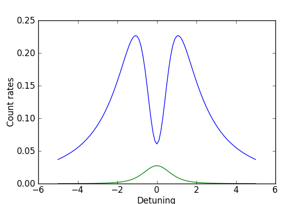
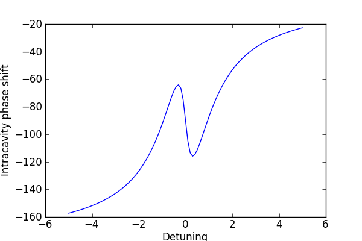

Finds steady-state solution to driven system of cavity + qubit¶
Here we will find the steady-state solution to the problem of a driven-cavity coupled to a two-level (qubit) system for various driving frequencies. This example also demonstrates the use of the qutip.parfor() function. Adapted from the qotoolbox example ‘probss’ by Sze. M. Tan.
#This file is part of QuTIP.
#
# QuTIP is free software: you can redistribute it and/or modify
# it under the terms of the GNU General Public License as published by
# the Free Software Foundation, either version 3 of the License, or
# (at your option) any later version.
#
# QuTIP is distributed in the hope that it will be useful,
# but WITHOUT ANY WARRANTY; without even the implied warranty of
# MERCHANTABILITY or FITNESS FOR A PARTICULAR PURPOSE. See the
# GNU General Public License for more details.
#
# You should have received a copy of the GNU General Public License
# along with QuTIP. If not, see <http://www.gnu.org/licenses/>.
#
# Copyright (C) 2011, Paul D. Nation & Robert J. Johansson
#
###########################################################################
from qutip import *
from pylab import *
def probss(E,kappa,gamma,g,wc,w0,wl,N):
ida=qeye(N)
idatom=qeye(2)
a=tensor(destroy(N),idatom)
sm=tensor(ida,sigmam())
#Hamiltonian
H=(w0-wl)*sm.dag()*sm+(wc-wl)*a.dag()*a+1j*g*(a.dag()*sm-sm.dag()*a)+E*(a.dag()+a)
#Collapse operators
C1=sqrt(2*kappa)*a
C2=sqrt(gamma)*sm
C1dC1=C1.dag() * C1
C2dC2=C2.dag() * C2
#Liouvillian
L = liouvillian(H, [C1, C2])
#find steady state
rhoss=steady(L)
#calculate expectation values
count1=expect(C1dC1,rhoss)
count2=expect(C2dC2,rhoss)
infield=expect(a,rhoss)
return count1,count2,infield
#-------------------------------------------------------------------------------
# setup the calculation
#-------------------------------------------------------------------------------
kappa=2
gamma=0.2
g=1
wc=0
w0=0
N=5
E=0.5
nloop=101
wlist=linspace(-5,5,nloop)
#define single-variable function for use in parfor
def func(wl):#function of wl only
count1,count2,infield=probss(E,kappa,gamma,g,wc,w0,wl,N)
return count1,count2,infield
start_time=time.time()
#run parallel for-loop over wlist
[count1,count2,infield] = parfor(func,wlist)
print 'time elapsed = ' +str(time.time()-start_time)
fig=figure(figsize=[6,4])
plot(wlist,real(count1),wlist,real(count2))
xlabel('Detuning')
ylabel('Count rates')
savefig('examples-drivencavitysteady_1.png')
close(fig)
fig=figure(figsize=[6,4])
plot(wlist,180.0*angle(infield)/pi)
xlabel('Detuning')
ylabel('Intracavity phase shift')
savefig('examples-drivencavitysteady_2.png')
close(fig)

